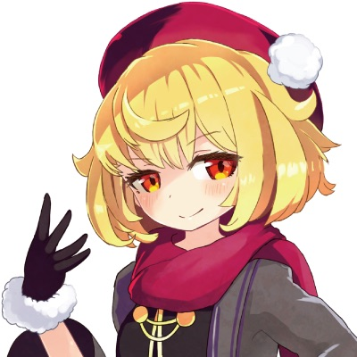
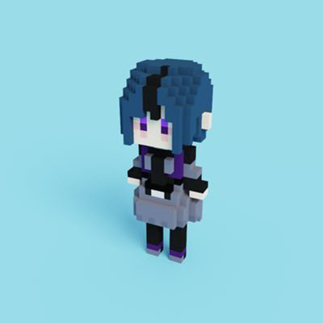
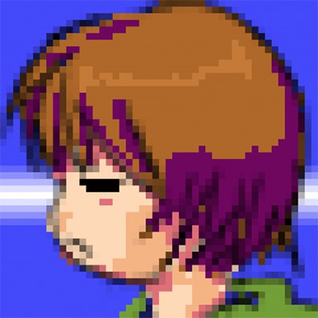
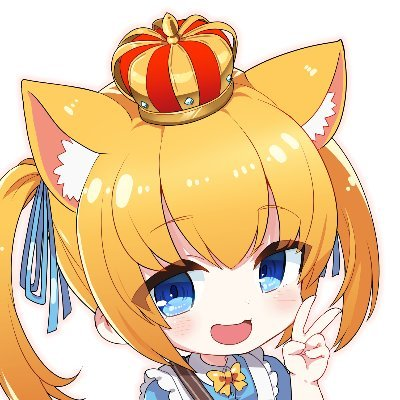
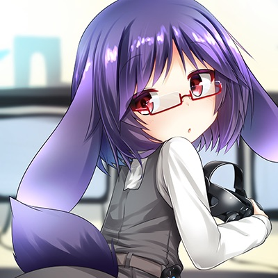

コミュニティオーガナイズドセッション
VRM勉強会
講演情報
| 資料公開予定 | 公開予定 |
|---|---|
| スクリーンショット撮影可否 | 可 |
| SNS投稿可否 | 可 |
コミュニティ概要
VRアバターの共通規格「VRM」に関する知見共有や、作ったアプリの自慢をする勉強会です。
講演概要
VRMで表情をこねくり回す技術
VRMの表情を司るBlendShapePloxyの解説とそれにまつわるトピックをお話しします。
山本 允葵 (えむにわ)
フェイシャルキャプチャーアプリ「waidayo」を支える技術
バーチャルモーションキャプチャー等と連携が可能なiPhone/iPadに搭載されるTrueDepthカメラを用いたフェイシャルキャプチャーアプリ「waidayo」を支える技術ついてご紹介します。
nmちゃん
私とVRMの歩みと戦闘記録
私がVRMを触り始めたきっかけと、今まで触ってきた中でどういうことがあったかをかいつまんでお話しします。
昔苦労したことが今は苦労しなくていいことなど話していけたらなと思います。
白河ゆかな
講演者詳細
-

VRM勉強会の運営をしています。Microsoft MVP for Developer Technologies 2018〜
-

VRM勉強会の運営 / xR Engineer / ゲームクリエイター/ YouTuber
仕事でVRゲームを開発しながら、YouTubeで消しゴムを食べたり、勉強会の主宰をしたりしています。著書：技術評論社『VRエンジニア養成読本』共著 -

何でも屋系フリーランスエンジニア。ネットワークバックエンド・インフラの仕事に従事する傍ら、OSSでVRM関連ライブラリなどを開発している。執筆歴はVRM FANBOOK (技術書典5) 他
-

nmちゃんだよ。VR関係の仕事をしてるよ。
-

2018年5月ごろより活動しているBeatSaber系？Vtuber、150体以上の販売アバターを所持し、200体以上のVRMアバターを変換しているただの変態さん、VRM変換で困ったことがあれば何でも聞いてください。
私自身は長兎路こよりさん製作のワンオフアバターになります